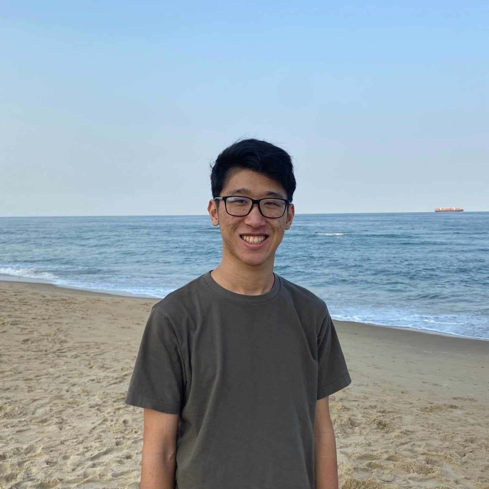

Hello there! My name is Kevin Wu, and I am a second year doctoral student at the University of Washington in the Electrical and Computer Engineering department.
Right now, my interests lie in neutral atom quantum computing, quantum error correction, and machine learning.
In my free time, I like to scull or sweep on various and go to the gym!
